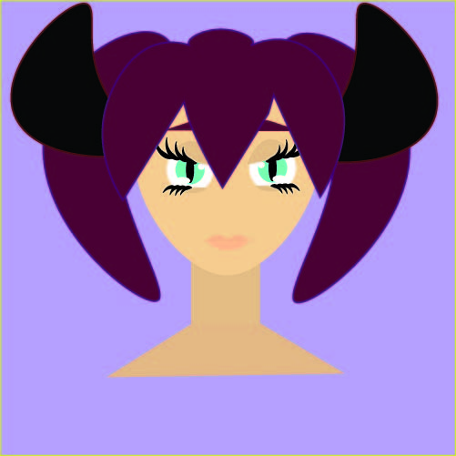

Penelope Vejectco has the last name that holds high respect in her colony. However, due to her appearance that's more human and extraordinarily little dragon like features, she is known as an outcast. Even though the dragons have human forms, they can still transform into dragons. Penelope cannot do this; she has been in her human form since an early age. The colony believes that this means there was a curse place on their land. Which made them scared, and they had no choice but to push her away. However, her family is still with her and is still viewed highly. They still try to give Penelope the best life she could get.
